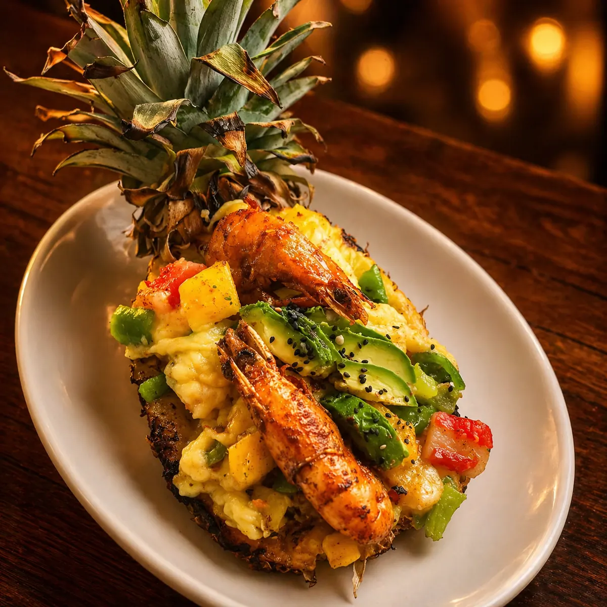
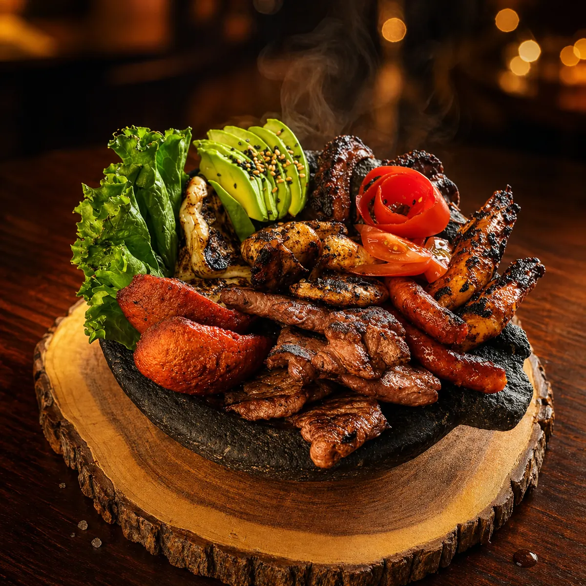
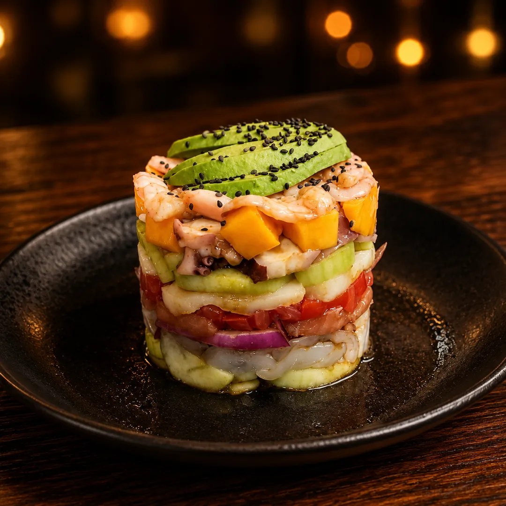
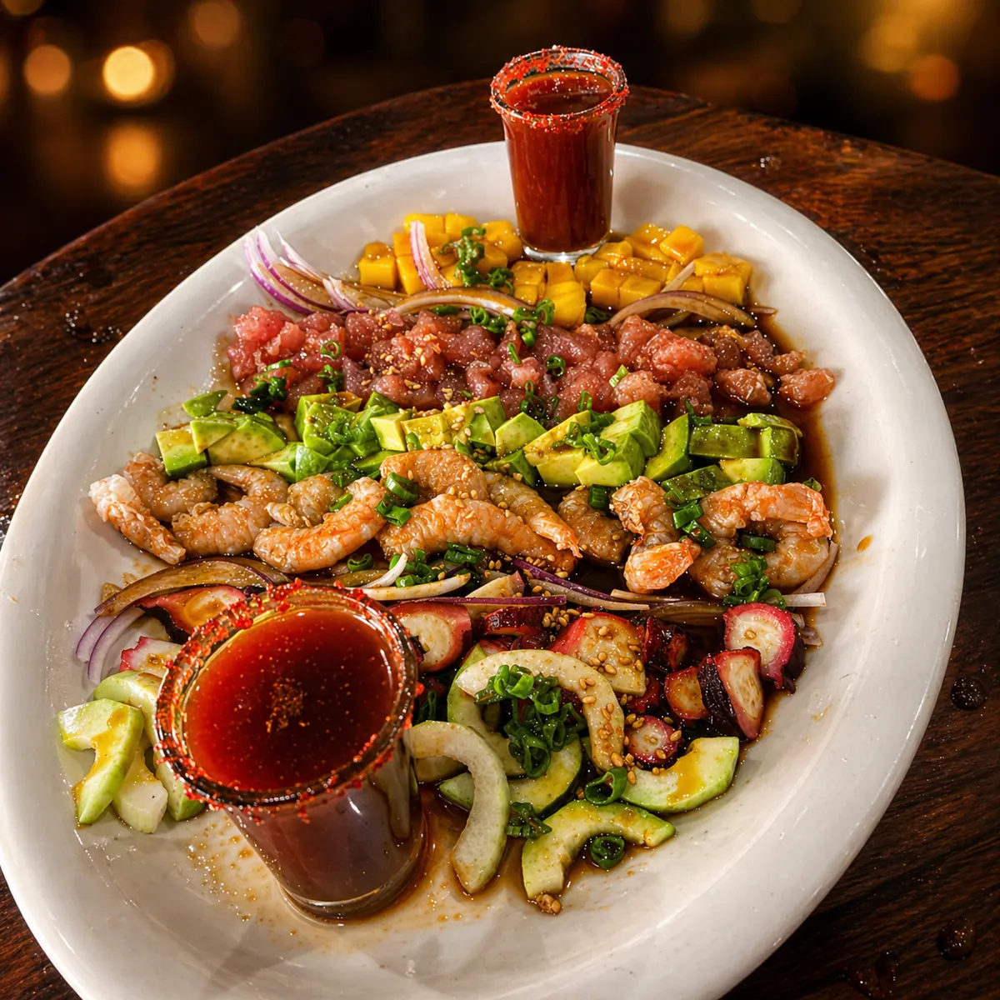
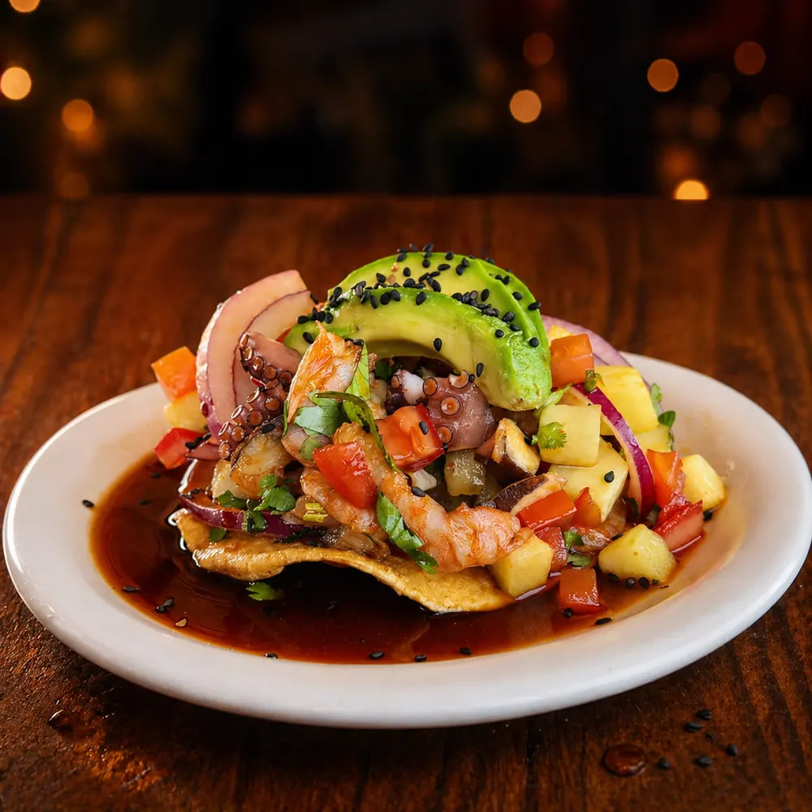
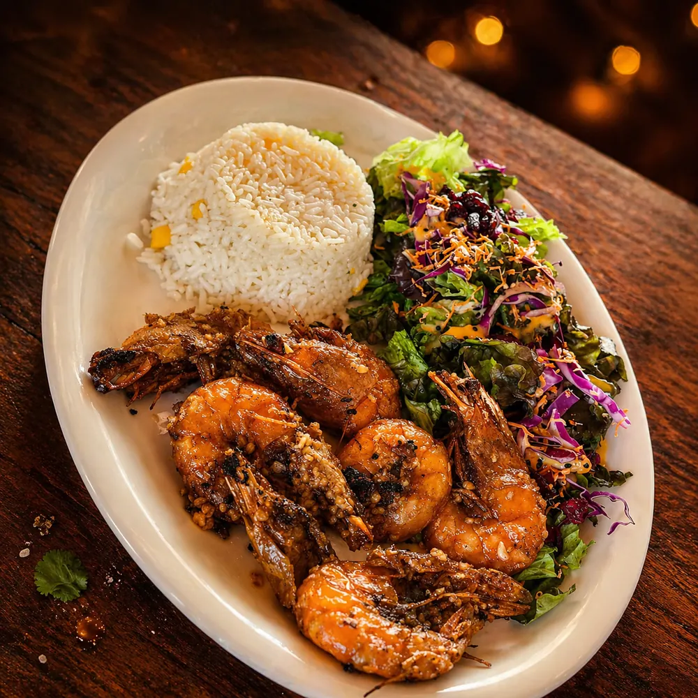
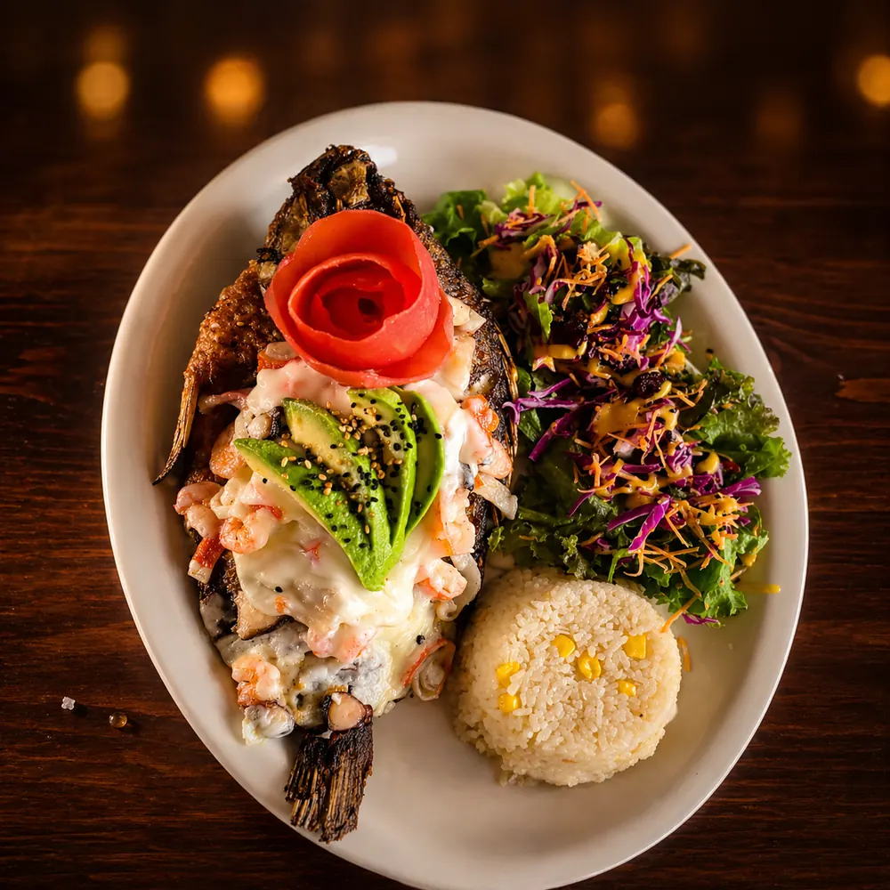
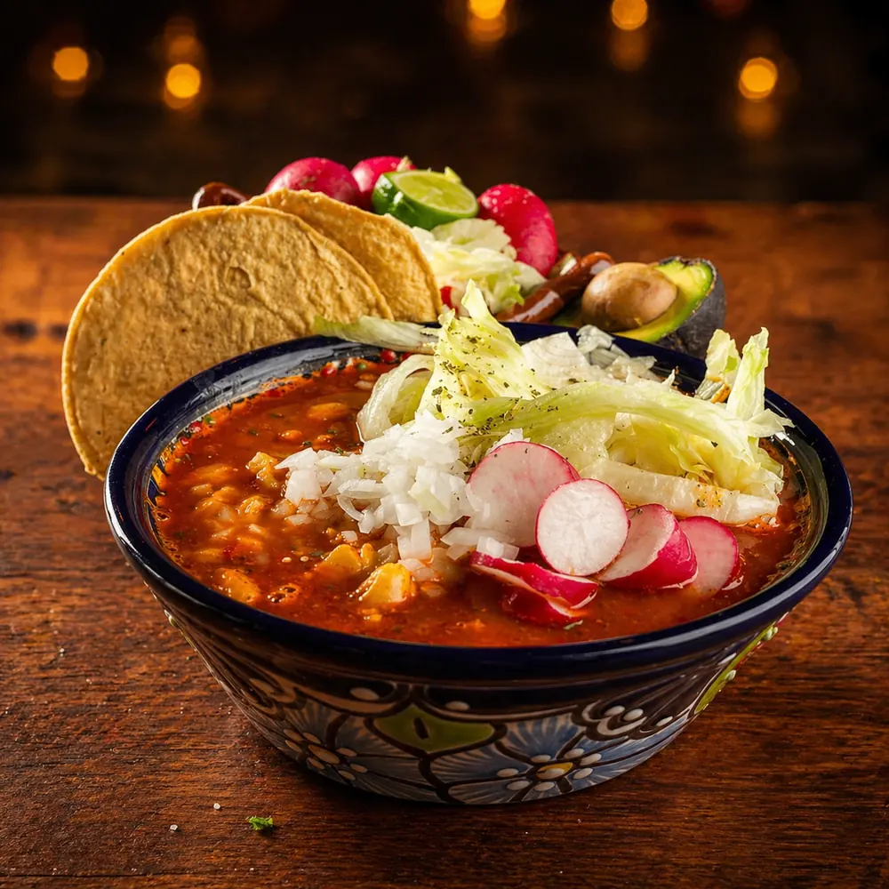
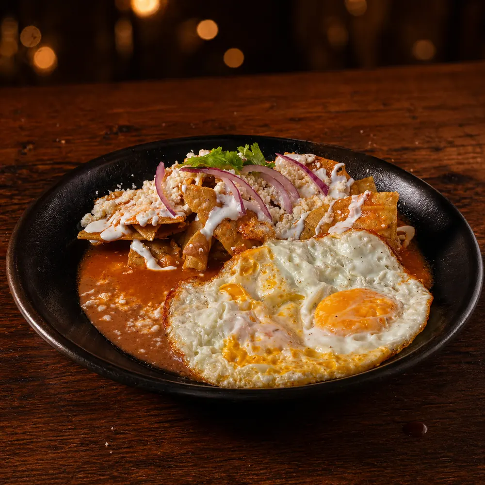
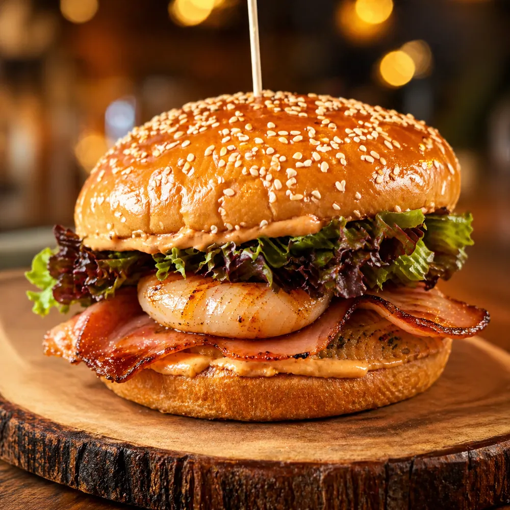

⚓ Recomendación 01

Piña rellena
Mezcla de mariscos y pimientos servida en su propia cáscara, gratinada con queso. Tropical y completa.
$280Seis capítulos principales, todos los precios visibles. Aguachiles, ceviches, camarones, pescados, pozole los jueves-viernes y desayunos desde las 9 AM. Mariscos frescos de la costa de Michoacán, recetas heredadas de generación en generación.
Cuatro platillos que no se reservan, se piden con tiempo. Especiales que valen el viaje al muelle, sin importar de qué capítulo te toque venir.

Mezcla de mariscos y pimientos servida en su propia cáscara, gratinada con queso. Tropical y completa.
$280
Arrachera, chistorra, salchicha, pulpo, camarones y queso panela. El más completo de la casa, con tortillas calientitas.
$360
Capas de camarón crudo y cocido, pulpo, callo de hacha, aguacate, pepino y jitomate, marinada con salsas negras.
$250
Atún, camarón crudo y cocido, pulpo, pepino, cebolla morada, mango y aguacate. Acompañada de shot de clamato y salsa de la casa.
$290
Verde, negro, mango y del muelle. Por jarra de medio o un litro.
Ver capítulo →
Nueve tostadas individuales y ceviche por jarra. Costa de Michoacán.
Ver capítulo →
Once preparaciones distintas, $220 c/u. Cocteles en tres tamaños.
Ver capítulo →
Filete desde $190, mojarra entera $290, pulpo $270. Caldos del mar.
Ver capítulo →
Sólo jueves y viernes, tres tamaños desde $40.
Ver capítulo →
Huevos, chilaquiles, omelettes, hot cakes y café de olla.
Ver capítulo →Pregunta por disponibilidad — algunos especiales dependen de la pesca y el inventario de la semana.
El único platillo que lleva el nombre de la casa. Disponible con res o camarón. Lechuga, jitomate, cebolla, queso amarillo, queso manchego, tocino, champiñones, piña asada y chiles toreados. Acompañada de papas a la francesa.
Disponible con res o camarón.

Carta completa, precios visibles, ambiente familiar. La Hamburguesa Muelle te espera.
Cuéntanos un poco para atenderte mejor.
Estás a un toque de hablar con nosotros al 442 808 5907.